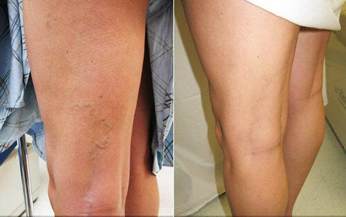
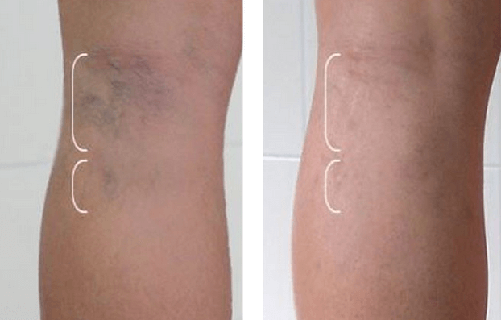

OLVÍDESE DE LAS VÁRICES PARA SIEMPRE
El producto que me ayudó nunca ha salido por televisión.
 ¡Hola a todos! Soy Carolina Hernández. Nunca imaginé que las várices podrían atacar mis piernas,
pues no hay antecedentes en mi familia, pero 12 horas de trabajo al día en una tienda de ropa
durante 8 años seguidos me afectaron. Después de tareas como poner las cosas en los estantes y
seguir a los clientes todo el día, al final de la jornada, ¡NO PODÍA SENTIR MIS PIERNAS
! Cuando se hinchan las venas, empiezas a sentir dolor y una sensación de ardor. Se siente como si
cada vena se cauterizara con un hierro caliente. Provoca una picazón insoportable y nada ayuda.
¡Hola a todos! Soy Carolina Hernández. Nunca imaginé que las várices podrían atacar mis piernas,
pues no hay antecedentes en mi familia, pero 12 horas de trabajo al día en una tienda de ropa
durante 8 años seguidos me afectaron. Después de tareas como poner las cosas en los estantes y
seguir a los clientes todo el día, al final de la jornada, ¡NO PODÍA SENTIR MIS PIERNAS
! Cuando se hinchan las venas, empiezas a sentir dolor y una sensación de ardor. Se siente como si
cada vena se cauterizara con un hierro caliente. Provoca una picazón insoportable y nada ayuda.
La sensación de dolor en la acumulación de nódulos se vuelve palpitante, dolorosa, ardiente o sorda... En un solo día, sientes varios tipos de dolores diferentes. ¿Puedes imaginarlo? Tuve estos dolores por seis años, ¡ningún remedio me ayudaba!
Decidí ocultar esas várices debajo de faldas largas y pantalones anchos a pesar de que, con la figura que tengo, pudiera permitirme usar los trajes más reveladores. Sin contar el hecho de que no he ido a una playa en casi 29 años. Tengo 34 años y aún no estoy casada; siempre estoy envuelta en faldas largas, chaquetas y pantalones de la cabeza a los pies, me veo como una monja... Si sumamos los más de mil complejos de inferioridad que tengo, ¿quién se atrevería a conocerme? Es raro que los chicos traten de conocerme, y lo hacen porque están desesperados y ya fueron rechazados por el resto de las chicas lindas. Solo ellos me encontraban atractiva, como si yo fuera un IMÁN PARA PERDEDORES .
Logré salir de una depresión después de constantes insultos de mi ex. Siempre me insultaba en público y le hablaba a sus amigos de cómo mis piernas se veían púrpuras y feas... Me decía que le daba asco tocarme e irse a la cama conmigo.
Me llamaba lisiada porque los fines de semana permanecía acostada en un sofá por demasiado tiempo para descansar mis piernas después de una larga semana de trabajo y para tratar de aliviar al menos un poco el dolor incesante.
De mis amigos... Bueno, seamos honestos, no puedo llamarlos «amigos». No recibí una sola palabra de apoyo de ellos cuando más los necesité. Me hacían invitaciones, simplemente para llenar espacio, y me trataban como la AMIGA FEA Dejé de asistir a esas reuniones.
Por supuesto, me hice muchos exámenes médicos, pasé horas en el hospital y seguí pagando los tratamientos... Nada me ayudó.
Lo peor es que incluso someterme a una intervención quirúrgica no daba ninguna garantía. Después de la primera recaída, las venas se me debilitaron mucho y los pies se me hincharon; se veían como los de un elefante. Estaban enormes, y cualquier movimiento me causaba un dolor penetrante. Sentía muchos rayos clavados en las piernas.
¿Podría un conocido casual ayudar a recuperarme?
Recientemente, el dolor se hizo absolutamente insoportable, la carga de trabajo me había afectado mucho. Vuelvo a mencionar que trabajo en una tienda de ropa. Mi gerente principal notó de inmediato cómo mi efectividad disminuyó. Me llamó y me pidió que cambiara de trabajo.
 ¡Perder mi fuente de ingresos a los 34 años...! Le dije que me esforzaría todo lo posible, y me
aconsejó irme de vacaciones para relajarme un poco. Comprendí claramente que podría ser el final. En
esos tiempos, mis padres me daban mucho apoyo. ¡Mi padre incluso me llevó a un balneario en el que
conocí a mi salvadora! ¡Esta mujer parecía tener 60 años, pero sus piernas eran perfectas, estaba
volando en tacones altos y NO tenía signos de VÁRICES en sus piernas! A diferencia de las mías...
¡Perder mi fuente de ingresos a los 34 años...! Le dije que me esforzaría todo lo posible, y me
aconsejó irme de vacaciones para relajarme un poco. Comprendí claramente que podría ser el final. En
esos tiempos, mis padres me daban mucho apoyo. ¡Mi padre incluso me llevó a un balneario en el que
conocí a mi salvadora! ¡Esta mujer parecía tener 60 años, pero sus piernas eran perfectas, estaba
volando en tacones altos y NO tenía signos de VÁRICES en sus piernas! A diferencia de las mías...
Empezamos a hablar y resultó ser que mi nueva amiga ha estado trabajando como cirujana vascular toda su vida y ha hecho miles de cirugías por várices. Se dio cuenta de la condición de mis piernas y dijo que representaba un gran peligro para la salud a mi edad. Le pregunté: «¿Crees que puedo deshacerme de esta pesadilla?». Me respondió que hace unos años la única solución era someterse a una cirugía muy cara.
Sin embargo, en la actualidad, la medicina ofrece un tratamiento alternativo con la ayuda de una crema antivárices llamada . Se puede utilizar en todas las etapas de la enfermedad.
Leí las críticas para terminar de decidirme. Resulta que esta crema era conocida desde hace bastante tiempo. Se ha vuelto cada vez más popular por el efecto impresionante que tiene y disfrutan todas las personas que la han usado.
Sinceramente, después de tantos intentos fallidos de curar las várices y los recientes acontecimientos en mi vida, perdí por completo la fe, pero aún así probé suerte con este producto .
MÁS INFORMACIÓN
Era la primera semana, y el proceso había comenzado.
Empecé a usar la crema de inmediato en la primera noche. Quiero resaltar también que, al final de la primera semana, mis pies estaban menos hinchados, y esa sensación de «cosquilleo» desapareció, pero no noté ningún cambio en el exterior.
Mis amigos y yo fuimos el fin de semana a hacer caminar, a nadar y a tomar el sol. Todos se divirtieron, excepto yo. Seguía pensando en mis piernas y no podía relajarme. Tuve que ocultarlas debajo de unos pantalones holgados . Mis amigos me preguntaban por qué no me unía a ellos. Me sentía tan tentada a saltar al agua fría con los demás (me moría de calor en esos pantalones) y finalmente me los quité. Todos miraron mis piernas . No es el tipo de atención que quieres atraer ni los amigos que quieres tener.
Llegó la tercera semana, y me alegré con el resultado.
Parecía que las venas en mi cadera se habían aclarado ligeramente . Sin embargo, la parte inferior de mis piernas todavía estaba cubierta de venas horribles. No podía dejar de soñar con tener piernas hermosas e ir a la playa. Hoy, me compré una falda nueva y bonita. No he decidido todavía para cuál ocasión me la pondré, ¡pero la espera casi termina!
Al final del día, puedo caminar por el supermercado, comprar productos sin estar apurada como de costumbre e incluso hacer algunas tareas domésticas.
En uno de los foros, le recomendé a una chica que ordenara también, su historia me recordó a mí misma.
Es necesario aplicar esta crema diariamente antes de ir a la cama, algo muy sencillo. No deja manchas en las sábanas y se absorbe al instante.
¡Es una delicia! ¡Una vida nueva!
Han pasado aproximadamente 3 meses desde que comencé a usar esta crema antivárices. ¡Casi todos los nódulos venosos se han ido! ¡No me lo puedo creer! ¡Poco a poco, empiezo a usar tacones y vestidos! ¡Estoy muy feliz! Dios, concédele salud y muchos años de vida a mi salvadora de aquel balneario al que fui.
Volví a trabajar después de las vacaciones, y las chicas con las que trabajo me elogiaron. ¡Era la primera vez que me veían con un vestido! Me sentí con tanta confianza.
Comencé a trabajar mejor, y mis piernas dejaron de doler. No sentía pesadez en las piernas ni hinchazón, y todas las venas protuberantes habían desaparecido. No esperaba tal resultado, el producto resultó ser realmente bueno a pesar de su bajo precio.
Y también nuestro desarrollador de software, realmente me agradó por cierto, ¡me ofreció pasar unas vacaciones en el mar con él! ¡Aquí está nuestra foto, todavía no puedo creer que finalmente tenga piernas sanas y hermosas! También nos vemos bien juntos, ¿verdad? :) ¡Ya no tengo por qué sentirme avergonzada de mí misma! ¿No es esa la verdadera felicidad?
Ahora, vamos al grano. Dónde se puede obtener la crema . Para ser honesta, nunca pregunté en farmacias. La ordené desde el sitio web que la mujer del balneario me recomendó. Supongo que hay otros lugares donde la venden, pero ese es el sitio web del fabricante, lo que garantiza la calidad (algo importante). La entrega es rápida, se paga al recibirla y no hay estafas.
Р. D. Aquellas personas que ya hayan utilizado este producto, por favor, dejen sus comentarios. Si alguien sabe de alguna tienda y farmacia (de confianza) en las que podamos comprar esta crema, díganos. ¡Sigan saludables!